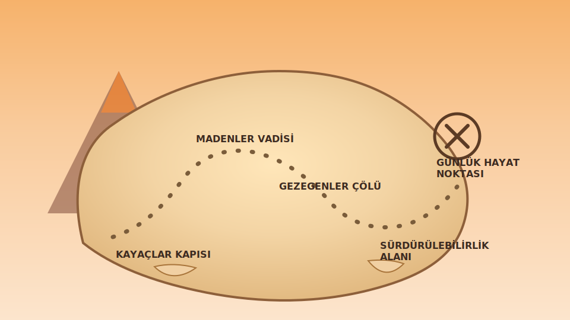

Kayaçlar Yolculuğu
Harita üzerinde ilerleyerek kayaçlar, madenler, gezegenler ve sürdürülebilirlik bölümlerini keşfet!
Jeoloji Haritası
Bölümleri sırayla tamamlamalısın. Bir bölüm bitmeden diğeri açılmaz.
01 ile başla ve yolu takip et!

X
Kaçış Noktası
Bölüm Durumları
Bölüm
Soru 1 / 10
Tebrikler!
🏅
Haritaya dönüp bir sonraki bölümü açabilir ve laboratuvardan kaçmaya devam edebilirsin.